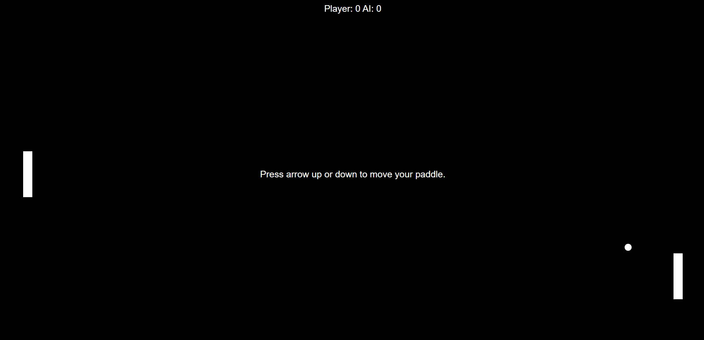
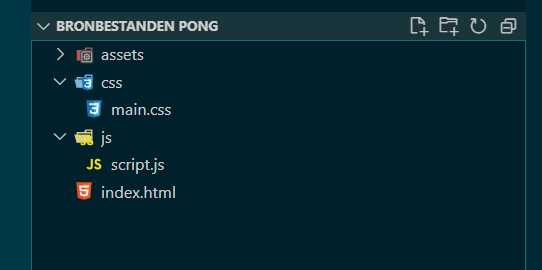
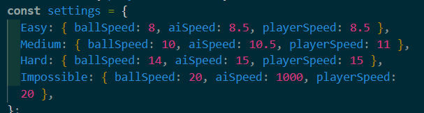
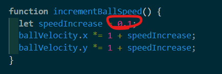
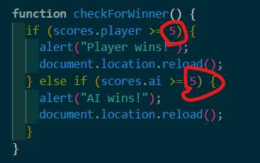

We gaan een ping pong game maken
Net zoals de foto hieronder:
Daarvoor hebben we drie codetalen nodig
- HTML
- CSS
- JavaScript
STAP 1 - MAPPENSTRUCTUUR
We hebben een code-editor nodig. In de workshop gebruiken we Visual Studio Code.
-
1.1 Download volgende bronbestanden, plaats deze op
je bureaublad of een andere map naar keuze en pak de zip-file
vervolgens uit
DOWNLOAD bronbestanden - 1.2 Open het programma Visual Studio Code. en open de folder die je zopas aangemaakt hebt.
-
1.3 De map- en bestandsstructuur ziet er zo uit:
 - 1.4 Installeer de live server extensie in Visual Studio Code.
- 1.5 Start de live server door rechtsonder de blauwe balk te klikken op Go Live Jouw standaard browser zal nu gestart worden en je zal een blanco webpagina zien!
STAP 2 - HTML & CSS
-
2.1 Kopieer onderstaande code in jouw
index.html-bestand. Bewaar vervolgens dat bestand.
-
2.2 Kopieer onderstaande code in jouw
main.css-bestand. Bewaar vervolgens dat bestand.
De background image bij de klasse menu kanje zelf bepalen.
STAP 3 - INTERACTIVITEIT MET JAVASCRIPT
-
3.1 Kopieer onderstaande code in jouw
app.js-bestand. Bewaar vervolgens dat bestand.
- 3.2 Nu is jouw game eigenlijk al klaar, maar als je de instellingen wilt aanpassen kan dat bij stap 4!.
STAP 4 - INSTELLINGEN
- 4.1 Bij de settings variable in script.js, kan je allerlei instellingen aanpassen
-
4.2 Per niveau kan je de ball snelheid en de
paddlesnelheid (van de speler en Ai) aanpassen naar hoe het zelf
wilt.
 -
4.3Bij de incrementBallSpeed functie kan je bepalen
met hoeveel de balsnelheid veranderd nadat het een paddle raakt.
 -
4.3Bij de checkForWinner functie kan je de
hoeveelheid rondes aanpassen.
